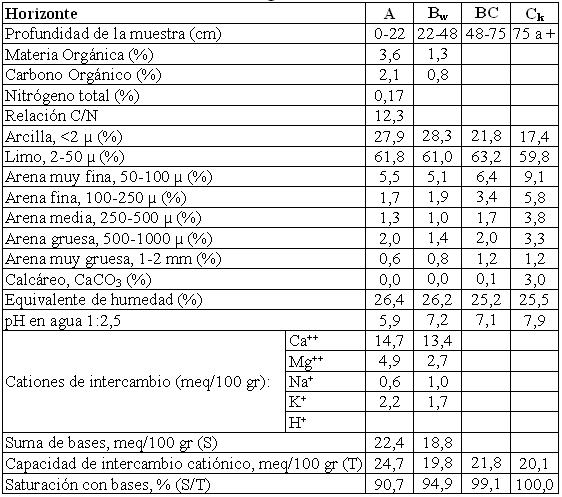

Haplustol típico, limosa fina, mixta, térmica
Capacidad de uso: IVc
Es un suelo ligera a moderadamente desarrollado sobre sedimentos eólicos redepositados y fluviales distales de derrames de desbordes. Su posición en el relieve es en forma de “filetes” suavemente cóncavos, alternando con sectores suavemente elevados donde se encuentran otros suelos de menor desarrollo. Es bien drenado y de buena capacidad de retención de la humedad sin otra limitante que la climática severa a moderada. Presenta un horizonte A de 22 cm de espesor de textura franco limosa a franco a arcillo limosa y estructura en bloques. Continúa hacia abajo el horizonte Bw de 22 a 48 cm ligeramente enriquecido en arcilla iluviales de textura franco arcillo limosa a franco limosa, con estructura en prismas y bloques débiles. El material madre del suelo se extiende desde la profundidad indicada y con carbonatos libres en la masa del suelo a partir de 75 cm.
Descripción del perfil típico:
El perfil representativo de este suelo fue descrito a 3 km al Oeste del paraje Los Mistoles, departamento Totoral, provincia de Córdoba.
A 0-22 cm; color en húmedo pardo grisáceo muy oscuro (10YR3/2), franco limoso a franco arcillo limoso; estructura en bloques subangulares medios moderados; friable en húmedo; ligeramente plástico; ligeramente adhesivo; pH 5.9; raíces abundantes; límite inferior claro.
Bw 22-48 cm; color en húmedo pardo oscuro (10YR3/3); franco arcillo limoso a franco limoso; estructura en prismas y bloques moderados a débiles; friable en húmedo; ligeramente plástico, ligeramente adhesivo; pH 7,2; barnices escasos y finos de arcilla y humus; raíces abundantes; límite inferior gradual.
BC 48-75 cm; color en húmedo pardo a pardo oscuro (7,5YR4/4); franco limoso; estructura en bloques débiles masivos; friable en húmedo; ligeramente plástico; no adhesivo; pH 7,1; vestigios de barnices; raíces escasas; límite inferior abrupto ondulado.
Ck 75 cm a +; color en húmedo pardo (7,5YR5/4); franco limoso; masivo; no plástico; no adhesivo; pH 7,9; moderada reacción al ácido clorhídrico en la masa del suelo.
Cuadro Nº14
Datos analíticos Serie EL TACO
Ubicación: Latitud 30°37'S Longitud 63°55'O Altitud: 394 m.s.n.m.

|